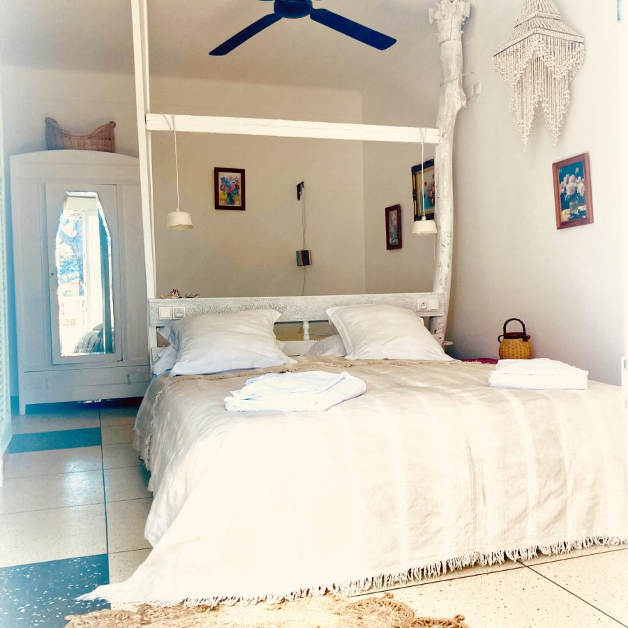

Beach
La mer turquoise de la baie de Hyères à vos pieds, les îles d'Or à l'horizon et le soleil varois pour compagnon fidèle.
La plage du Lido House
S'étendant sur près de deux cent mètres de sable fin, la plage privée du Lido House est un sanctuaire de tranquillité au cœur de la baie de Hyères. Face aux îles d'Or — Porquerolles, Port-Cros et le Levant — vous profiterez d'un panorama parmi les plus beaux de la Côte d'Azur, loin des plages bondées et de l'agitation estivale.
Nos équipes veillent à l'entretien quotidien du sable et de l'eau, afin que chaque matinée commence dans un cadre impeccable. Les eaux de la baie, classées parmi les plus propres de France, offrent une transparence cristalline propice à la baignade, au snorkeling et à l'observation de la faune marine.
En soirée, la plage se pare de lumières douces et devient le théâtre de couchers de soleil exceptionnels. Un verre à la main, face aux silhouettes violacées des îles, l'instant devient éternel. Le Lido House, c'est aussi ça : savoir s'arrêter.

Le Bar de la Plage
Installé directement sur le sable, notre bar de plage est l'endroit idéal pour se désaltérer sans quitter la vue sur la mer. Fraîcheur des boissons, chaleur des sourires : l'équipe du Lido House compose pour vous des cocktails maison inspirés de la Méditerranée — spritz à la fleur d'oranger, mojito à la menthe fraîche, sangria maison aux fruits rouges.
Pour les non-alcoolisés, la carte propose une belle sélection de jus pressés du moment, de smoothies aux fruits de saison, de thés glacés artisanaux et de limonades à la lavande. Des snacks légers — carpaccio de melon, verrines de ceviche, planches charcuterie & fromages — permettent de prolonger agréablement les heures sous le soleil.
Ouvert de 10h à 19h30
De mi-mars à fin octobre, tous les jours.
Carte spéciale coucher de soleil
Dès 18h, cocktails & tapas pour admirer le spectacle.
Activités nautiques & détente
La baie de Hyères est un terrain de jeu exceptionnel pour tous les amateurs de mer, qu'ils soient sportifs ou contemplatifs.
🤿 Snorkeling & Plongée
Les fonds marins de la baie de Hyères regorgent de vie. Équipements fournis sur place, baptêmes de plongée organisés.
🛶 Paddle & Kayak
Explorez la côte à votre rythme en paddle ou en kayak. Location à l'heure ou à la journée, avec ou sans guide.
⛵ Voile & Catamaran
Sorties voile vers les îles d'Or en catamaran ou en voilier. Demi-journées ou journées complètes sur réservation.
🧘 Yoga sur la plage
Cours de yoga au lever du soleil et en soirée, les pieds dans le sable. Tous niveaux, en groupe ou en cours particulier.
💆 Massages & Hammam
Notre espace bien-être avec hammam et salon de massages est ouvert sur rendez-vous chaque jour de la saison.
🌅 Excursions aux îles d'Or
Navettes privées vers Porquerolles et Port-Cros, joyaux du Parc National de Port-Cros, organisées sur demande.
Tout ce qu'il faut savoir
Tarifs & réservation de transats
* Les résidents de l'hôtel bénéficient de 20 % de réduction sur tous les équipements de plage.
Accès & informations
Saison
Ouvert de la mi-mars à la fin octobre. Le bar de plage ouvre à partir du 1er mai.
Horaires de la plage
De 9h à 20h en haute saison (juillet–août) ; 9h–19h le reste de la saison.
Parking
Parking privé gratuit pour les clients de l'hôtel. Parking public à 200 m pour les visiteurs extérieurs.
Accessibilité
La plage est accessible aux PMR avec un chemin aménagé depuis le parking. Fauteuil amphibie disponible sur demande.
« La mer, le sable, le soleil — trois mots qui résument notre philosophie : l'essentiel est ici, maintenant. »
— L'équipe du Lido House